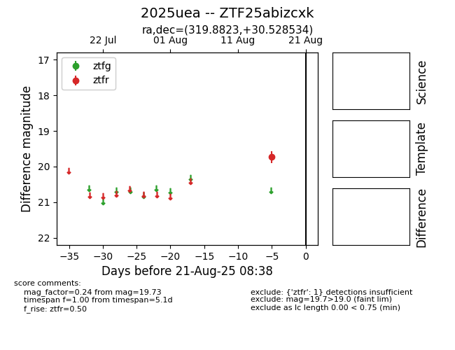

Target 2025uea at 2025-08-21 09:29, see:
FINK: fink-portal.org/ZTF25abizcxk
Lasair: lasair-ztf.lsst.ac.uk/objects/ZTF25abizcxk
ALeRCE: alerce.online/object/ZTF25abizcxk
TNS: wis-tns.org/object/2025uea
YSE: ziggy.ucolick.org/yse/transient_detail/2025uea
alt names
ZTF25abizcxk (ztf,alerce)
2025uea (tns,yse)
coordinates:
equatorial (ra, dec) = (319.8823,+30.52853)
galactic (l, b) = (77.9681,-13.29585)
photometry
last ztfr=19.73
1 ztfr detections
